v0.15.0 — 13/10/2026 — MVP 02: Núcleo compartilhado
Gestão privada de convites e ordem de criação/entrada. Antes real do Atlas em computador (09/58/59); a rota 59 não existia no aplicativo. Depois: Atlas e aplicação com contas locais temporárias; códigos mascarados, dados ilustrativos. Captura de conteúdo inteiro do Atlas expande somente altura e evita sobreposição da barra; não declara fidelidade de pixels.
Abrir MVP no Atlas · Contrato e teste manual
Antes — Atlas em computador
Tela 9 · antes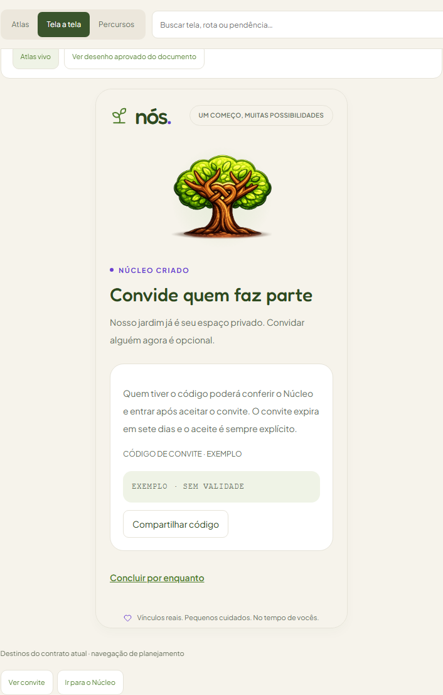
Tela 58 · antes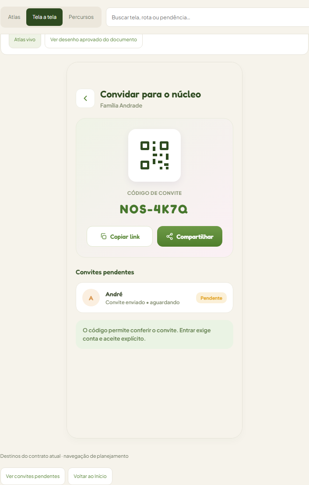
Tela 59 · antes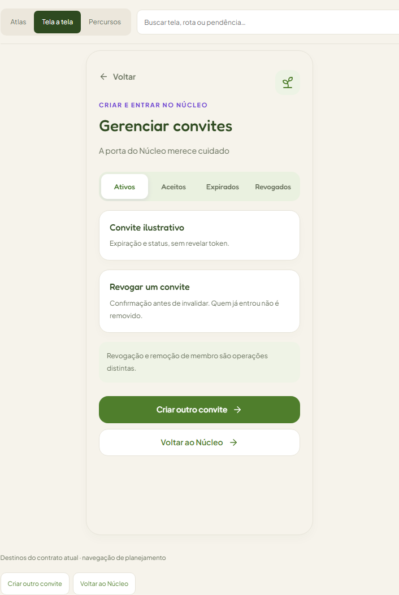
Convite e compartilhamento — depois
Atlas vivo · Tela 9 · desktop Atlas vivo · Tela 58 · desktop
Atlas vivo · Tela 58 · desktop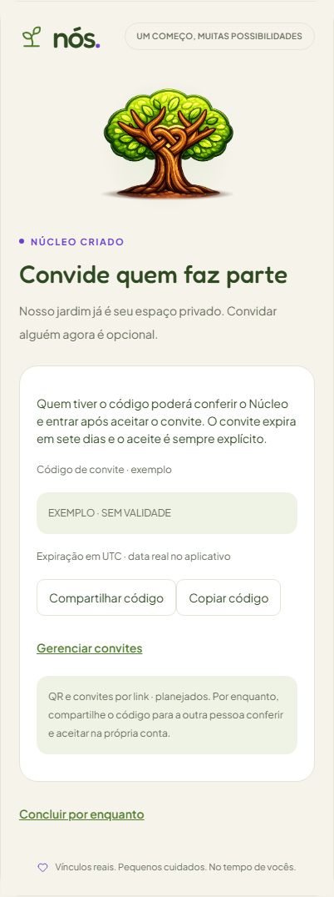
Aplicativo local · desktop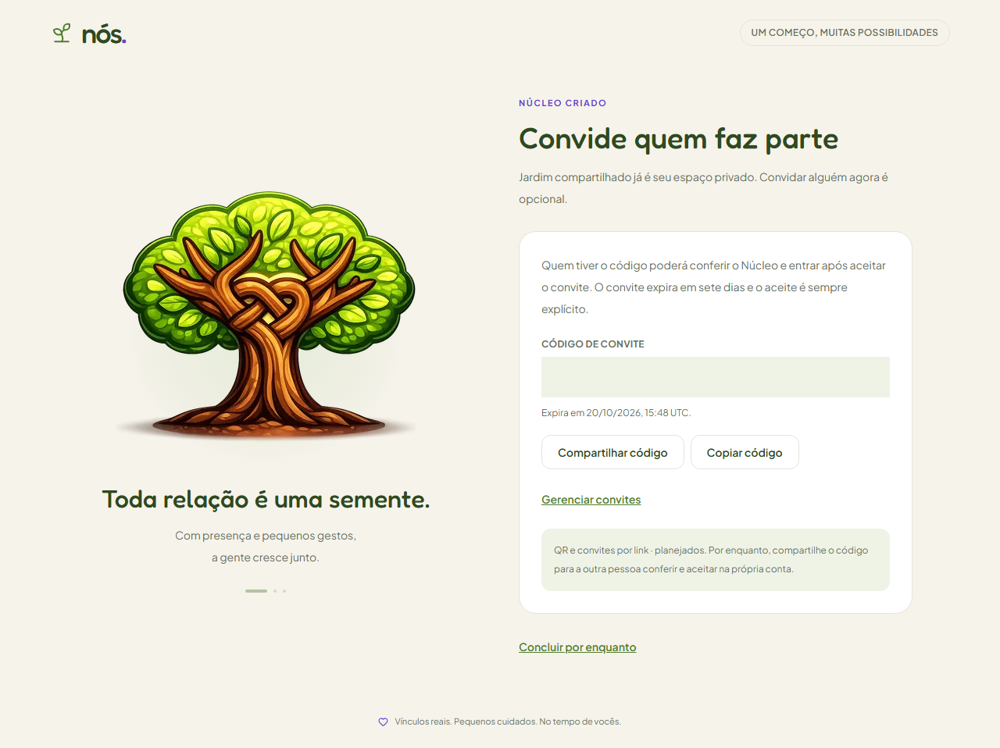
Atlas vivo · Tela 9 · mobileAtlas vivo · Tela 58 · mobile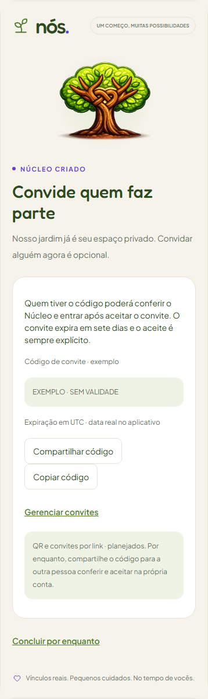
Aplicativo local · mobile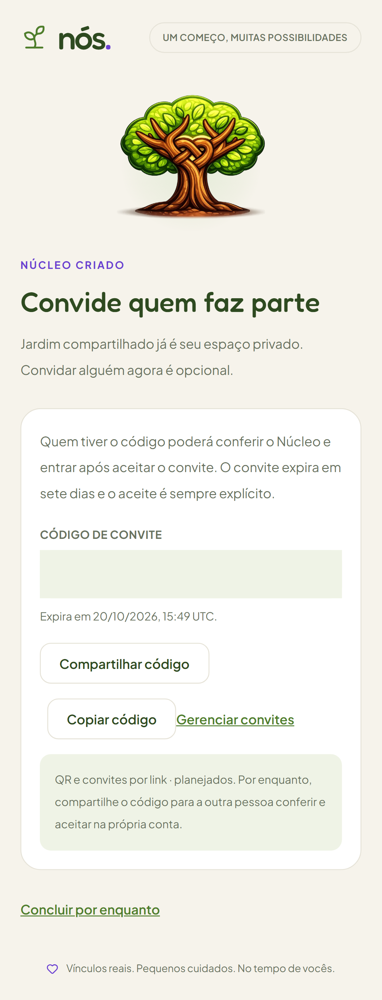
Gerenciar convites — depois
Atlas vivo · Tela 59 · desktop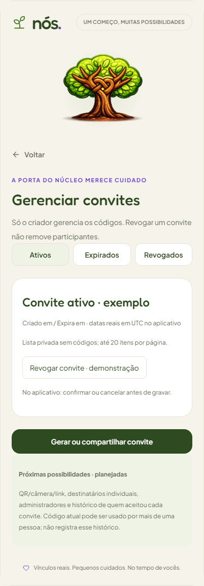
Aplicativo local · desktop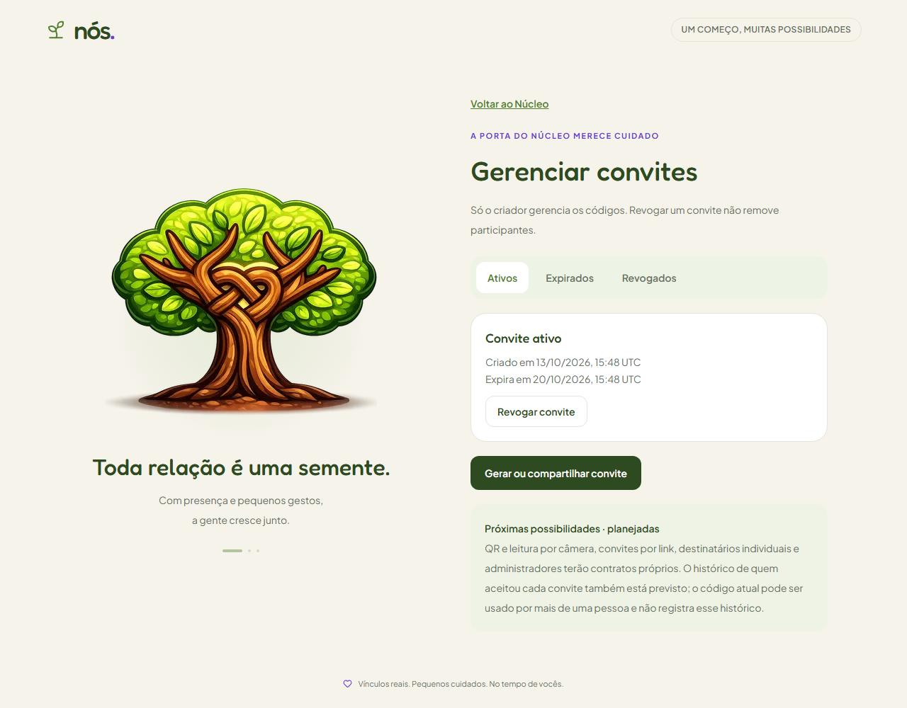
Atlas vivo · Tela 59 · mobile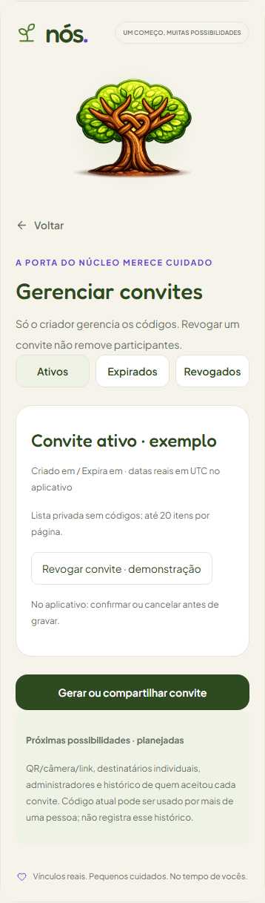
Aplicativo local · mobile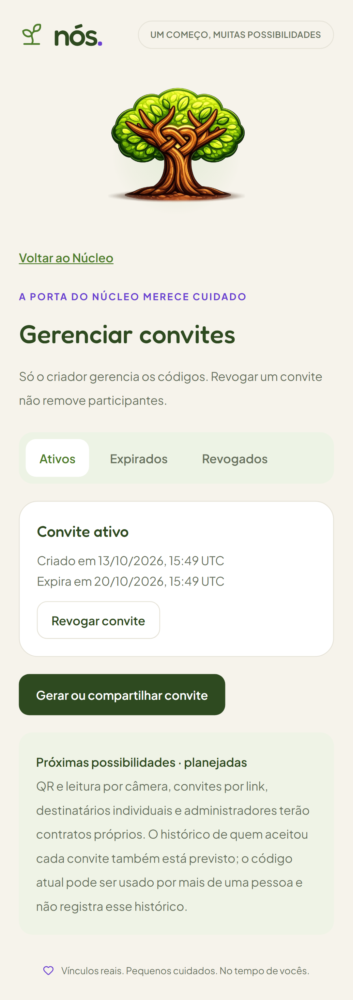
Início do Núcleo — depois
Atlas vivo · Tela 13 · desktop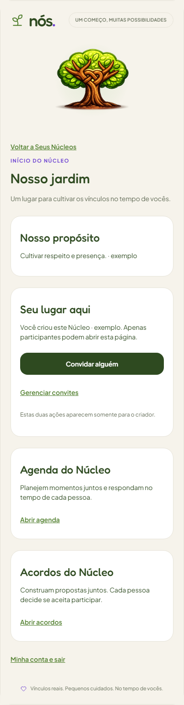
Aplicativo local · desktop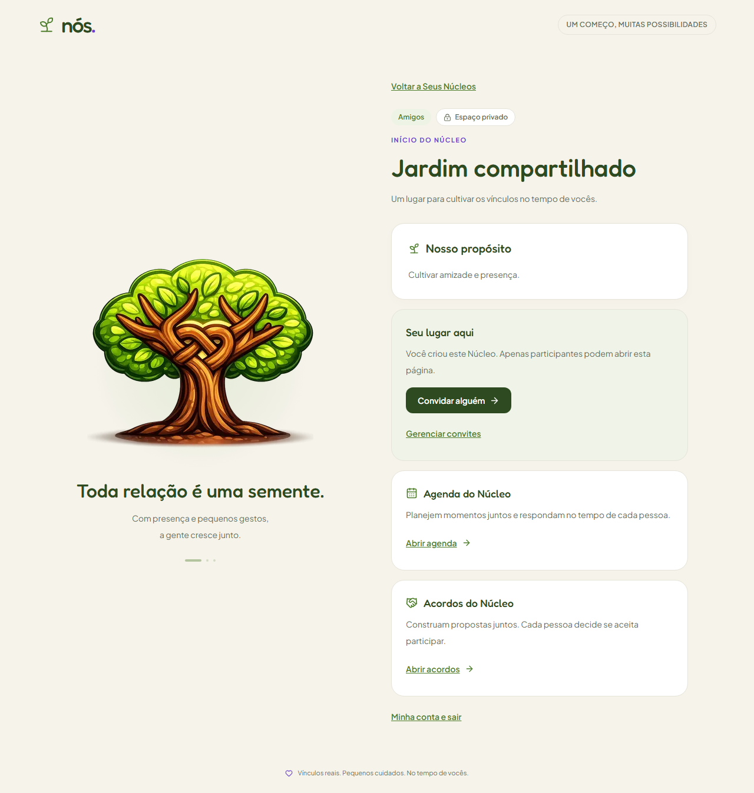
Atlas vivo · Tela 13 · mobile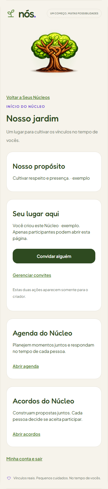
Aplicativo local · mobile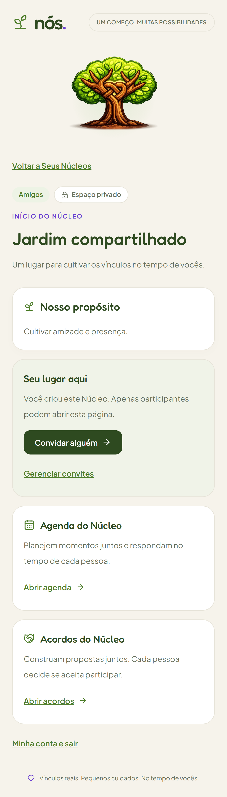
Resultado — revogado
Aplicativo · filtro Revogados · desktop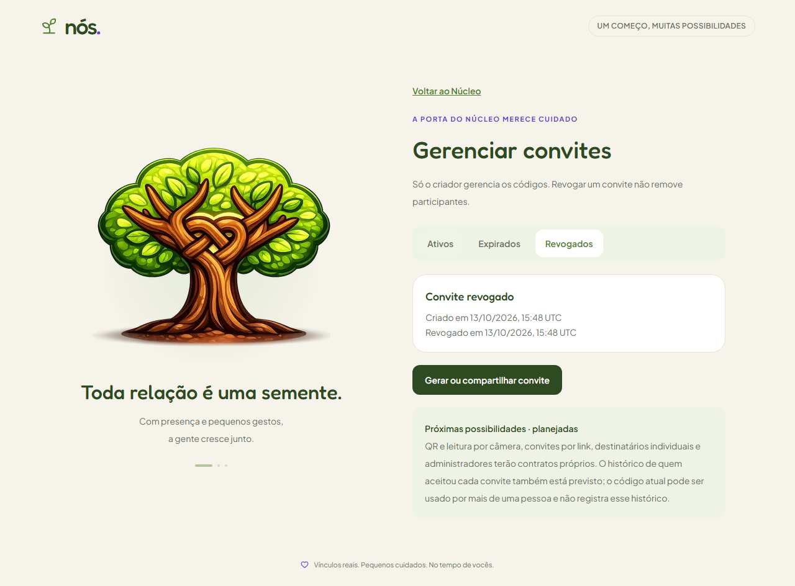
Aplicativo · filtro Revogados · mobile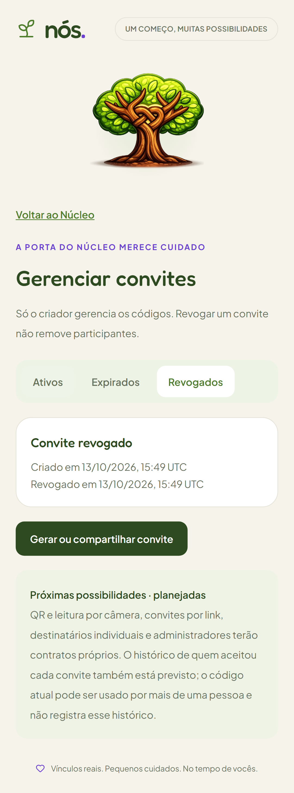
Somente criador gerencia; membro permanece associado após revogar. QR/câmera/link, destinatários individuais, administradores e histórico por aceite reservados. Integração online aguarda publicação e migração autorizadas.